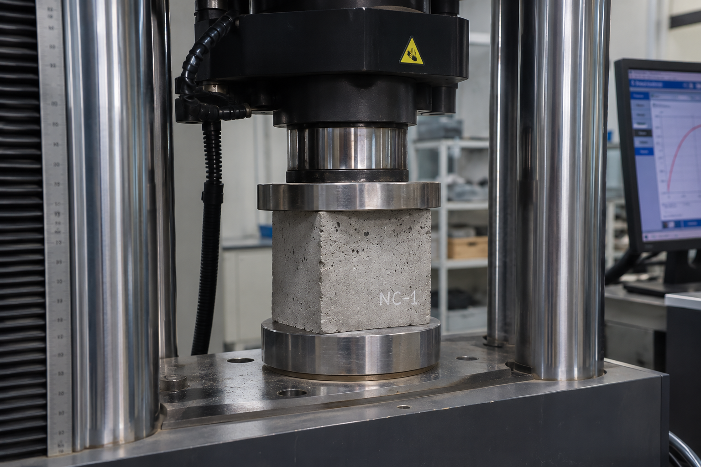
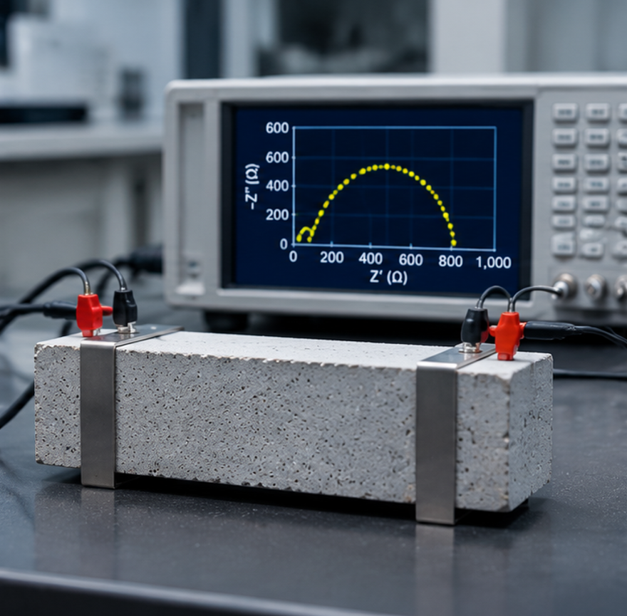

From the mix to the field: we make materials, teach them to sense, and restore the structures that depend on them.
배합에서 현장까지, 재료를 만들고, 스스로 감지하게 하고, 구조물을 되살립니다.

Smart construction materials
스마트 건설재료
We design cement‑based composites that are stronger, tougher and more functional, from ultra‑high‑performance concrete to strain‑hardening fiber‑reinforced composites.
초고성능 콘크리트부터 변형경화형 섬유보강 복합재료까지, 더 강하고 질기며 기능성을 갖춘 시멘트 복합재료를 설계합니다.
What we study
- Tensile and strain-hardening behavior of UHPC and SH-FRCCUHPC·SH-FRCC의 인장 및 변형경화 거동
- Fiber pullout and shape-memory-alloy fibers섬유 인발 거동과 형상기억합금 섬유
- Self-healing with super absorbent polymer and PVA fibers고흡수성 수지·PVA 섬유를 활용한 균열 자기치유
- Conductive fillers and nano functional fillers전도성 필러와 나노 기능성 필러

Electrical response & sensing
전기적 응답과 자가감지
We teach concrete to report on itself. By reading changes in resistance, capacitance and impedance, a structure can tell us about its stress, cracks and surrounding environment without added sensors.
콘크리트가 스스로 상태를 알려 주도록 합니다. 전기저항, 정전용량, 임피던스의 변화를 읽어 별도의 센서 없이 구조물의 응력, 균열, 주변 환경을 파악합니다.
What we study
- Self-sensing under cyclic and monotonic loading반복·단조 하중 하의 자가감지 거동
- Electrode materials, geometry and measurement frequency전극 재료·형상과 측정 주파수의 영향
- Monitoring in seawater and chloride-rich environments해수 및 염분 환경에서의 상태 모니터링
- Electrical impedance tomography for rebar and damage detection전기 임피던스 단층촬영을 이용한 철근·손상 탐지

Sustainable & repair materials
친환경·보수 재료
We cut the carbon footprint of binders and bring aging structures back into service, developing repair materials and the quality standards that keep them reliable on site.
결합재의 탄소 배출을 줄이고 노후 구조물을 다시 쓸 수 있게 합니다. 보수재료를 개발하고 현장에서 믿고 쓸 수 있는 품질 기준을 함께 만듭니다.
What we study
- Durability of slag-based zero-cement binders슬래그 기반 무시멘트 결합재의 내구성
- Mix design of polymer cement mortar and concrete (PCM, PCC)폴리머 시멘트 모르타르·콘크리트(PCM·PCC) 배합 설계
- Optimal water–powder ratio for plastering and injection미장용·압입타설용 최적 물-분체비
- Field quality criteria for section repair works단면복구공사 현장 품질 기준